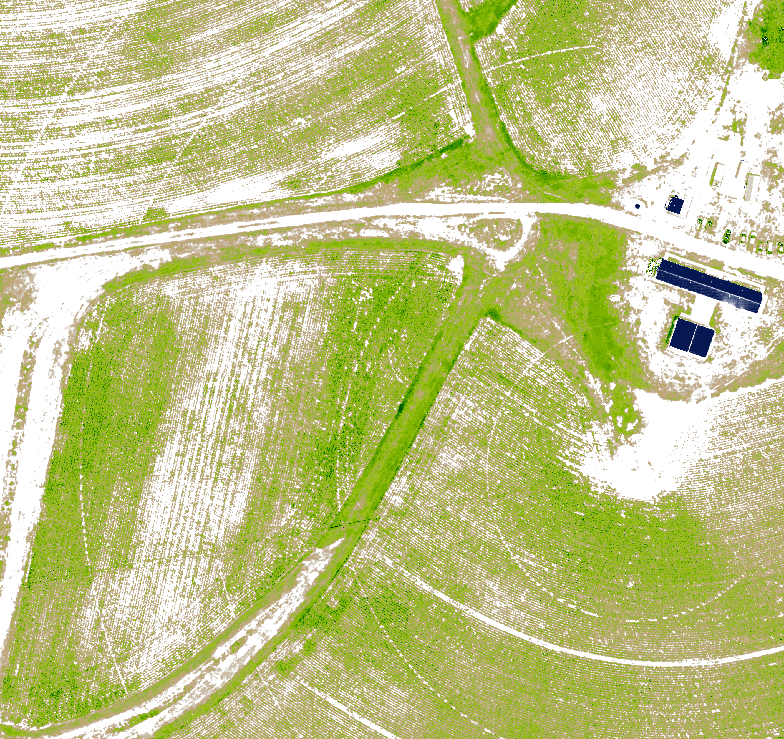
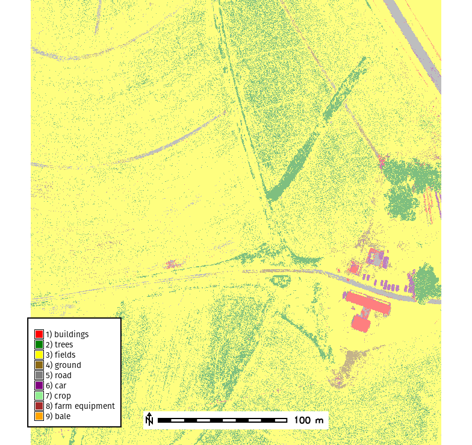

Create a new mapset within your Lake_Wheeler_NCspm project and set your working directory.
Import the ortho imagery for the July 17, 2024 UAS flight. The orthophoto is save as a Cloud Optimized GeoTIFF (COG) which allows us to directory import the data using r.import with needing to download the data beforehand.
Our original ortho bands were unsigned 8bit integers (a CELL data type in GRASS) ranging from 0-255 in value. However, when we calulate VARI the data is expected to be scaled from 0-1. To do this we must rescale our band data and cast our output data to Float32.
\[
VARI = \frac{(Green - Red)}{(Green + Red - Blue)}
\]
r.mapcalc--overwrite expression="odm_071724_ortho.vari = (odm_071724_ortho.green - odm_071724_ortho.red) / (odm_071724_ortho.green + odm_071724_ortho.red - odm_071724_ortho.blue)"# Use the same color palette as NDVIr.colors map=odm_071724_ortho.vari color=ndvi
Let’s examine the univariate statistics.
r.univar odm_071724_ortho.vari
We can see that our min, max, and variatoin coefficient are quite extreme as we would expect the results to fall within the range -1.0 - 1.0.
This may be casued by outliers in our data where values in our denominator are zero or very close to zero. To fix this we can add a small constant to our denominator called epsilon to avoid an possible divison by zero errors.
r.mapcalc--overwrite expression="odm_071724_ortho.vari = (odm_071724_ortho.green - odm_071724_ortho.red) / (odm_071724_ortho.green + odm_071724_ortho.red - odm_071724_ortho.blue + 0.01)"# Use the same color palette as NDVIr.colors map=odm_071724_ortho.vari color=ndvi
Now let’s recheck the univariate statistics.
r.univar odm_071724_ortho.vari
Although the min, max, and variatoin coefficient have improved they are still indicating outliers are skewing our data.
To address this create a mask for cells where the denominator is greater than 0.1.
Task: Examine areas that were excluded by the vari_mask. What type of things are responsible for the outliers? How else might you address these issues?

VARI Example
Low Pass Filters
We will now compute a smooth layer to remove noise from our data with the r.neighbors tool. To do this we will compute the mean value for each pixel using a 27x27 moving window.
We will now create a layer to define our edges using the zero-crossings edge detection method implemented as i.zc in GRASS. The output raster will contain cells (edges) labeled 0-4 which represent the azimuth directions (similar to aspect).
Task: Find a nice color scheme to display odm_071724_ortho.2.7x7stddev and describe what information can be derived from the map.
Texture Features
Now we will calcuate the texture features Angular Second Moment (asm), Correlation (corr), and Contrast (con) for our green band using r.texture which implements Haralick et al. (1973) Grey level co-occurrence matrix (GLCM).
Not all features need to come from spectal data! You can use data from the DSM to provide more data when training your classification model.
To start import the DSM data from the July, 2024 flight.
r.import resample=bilinear extent=region input=https://storage.googleapis.com/gis-course-data/gis584/uas-flight-data/Lake%20Wheeler%20-%20NCSU/071724/dsm.tif output=odm_071724_dsm# (Optional) Set the color table and create a relief map for viusalizationr.colors map=odm_071724_dsm color=elevationr.relief input=odm_071724_dsm output=dsm_relief
Compute the mean, standard deviation, and sum for each feature per segment. We also compute details about the geomertry of each segment such as the area, perimeter, and compactness.
Caution
If you run this command as givin it will take a long time to run. Try to reduce the number of segments to speed things up.
For classification we are going to use a decision tree based model called a RandomForest. To do this we need to install the GRASS addon r.learn.ml which gives us access to models from the scikit learn python library.
g.extension extension=r.learn.ml2
Sampling
One benifit of using the RandomForest classification model is that it utilizes a sampling strategy know as bootstraping. It does this by using out-of-bag samples (OOB) for each decision tree in the model. The OOB samples are used to calculate error, which works as a cross-validation mechanism and helps maintain diversity between decision trees.
However, many models require you to sample your data independently. To do this you can perform and random sample using r.random or a stratified random sample using r.sample.category.
Let’s import NLCD 2019 land cover data to perform the sampling.
Caution
When importing COGs make sure to set the extent=region to make sure you are only downloading the data you need.
Task: How many NLCD classes were sampled? Would these training points work well for classifying our dataset?
Train Model
To train the model you will use r.learn.train. The random forest model requires us to provide a training_map and our imagery group. To save time use our rgb_group, but in practice you should using the analysis_bands group that contains the additional features you created.
Training data can be downloaded here: Download Training Data or you can create your own using the g.gui.iclass tool found at Imagery -> Classify image -> Interactive input for supervised classification.
To use the downloaded training data you need to fisrt import training.gpkg into GRASS.
The training module r.learn.train expects the training_map parameter to be a raster, so you need to convert the training data to raster where the raster values matches each categories class.
You can calculate the feature importance by using the -f flag and saving the results to a csv file using the parameter fimp_file. Our feature importance is saved to feature_importance.csv.
The features with higher the importance scores indicate they are more influential in making predictions. While features with low importance, could potentially be removed to simplify the model.
# check raster categories - they are automatically applied to the classification outputr.category rf_classificationr.colors map=rf_basic_classification rules=category_colors.txt

Model Validation
We will now evaluate our model by looking at the models confussion matrix, overvall accuracy, and kappa coefficient using the GRASS addon r.confusionmatrix.
The output for our classified model will look similar to below
Overall accuracy
Number of correct pixels / total number of pixels
Overall Accuracy, 97.07
User Accuracy
From the perspective of the user of the classified map, how accurate is the map?
For a given class, how many of the pixels on the map are actually what they say they are?
Calculated as: Number correctly identified in a given map class / Number claimed to be in that map class
Producer Accuracy
From the perspective of the maker of the classified map, how accurate is the map?
For a given class in reference plots, how many of the pixels on the map are labeled correctly?
Calculated as: Number correctly identified in ref. plots of a given class / Number actually in that reference class
Commission Error
Commission error refers to sites that are classified as to reference sites that were left out (or omitted) from the correct class in the classified map. Commission errors are calculated by reviewing the classified sites for incorrect classifications.
Commission Error = 100 % - User Accuracy
Omission Error
Omission error refers to reference sites that were left out (or omitted) from the correct class in the classified map. The real land cover type was left out or omitted from the classified map.
Omission Error = 100 % - Producer Accuracy
Kappa coefficient
It characterizes the degree of matching between reference data set and classification.
Kappa = 0: indicates that obtained agreement equals chance agreement.
Kappa > 0: indicates that obtained agreement is greater than chance agreement.
Kappa < 0: indicates that obtained agreement is smaller than chance agreement.
Kappa = 1: is perfect agreement.
Kappa coefficient, 0.85
Important
Task: Interpret how well the model is performing. Which classes are performing well? Which need to be improved?